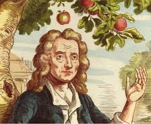
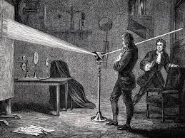

Um dos maiores cientistas da história.
Este site é um fã clube dedicado ao homem que revolucionou a física e a matemática.
Ver DescobertasIsaac Newton foi um físico, matemático e astrônomo inglês que formulou as leis do movimento e da gravitação universal.
Saiba mais
A famosa história da maçã representa a descoberta da gravidade, que explica por que os objetos são atraídos para a Terra.

Newton também desenvolveu o cálculo diferencial e integral, essencial para engenharia, física e tecnologia moderna.